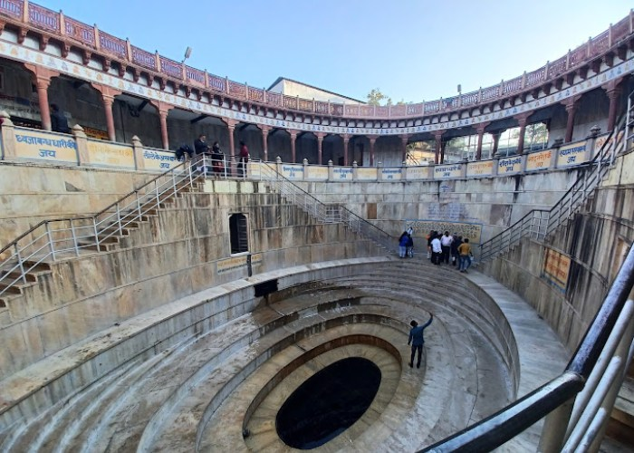

Sikar is one of the most beautiful cities of Rajasthan. It is famous for its historical forts, beautiful temples, colorful culture, traditional markets and educational institutions. Every year thousands of tourists visit Sikar to experience its heritage and vibrant lifestyle.
Sikar is located in the Shekhawati region of Rajasthan. It is known for its rich heritage, magnificent havelis, ancient temples, and educational institutions. The city attracts tourists because of its beautiful architecture and historical importance.
October to March is considered the best time to visit Sikar because the weather remains pleasant and comfortable for sightseeing.
One of the most famous pilgrimage places in Rajasthan.
An ancient Shiva temple situated on Aravalli Hills.

A famous temple dedicated to Goddess Jeen Mata.